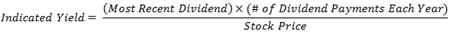

The dividend yield that a share of stock would return based on its current indicated dividend. Indicated yield is calculated by dividing the most recent dividend multiplied by the number of dividend payments each year (the indicated dividend) by the current share price, and is usually quoted as a percentage:
Stock ABC's most recent quarterly dividend, for example, might be $4. If the stock is currently trading at $100, the indicated yield would be:
Indicated Yield of Stock ABC = $4 X 4 / $100 = 16%
A dividend is a distribution of a portion of a company's earnings, usually quoted in terms of the dollar amount each share receives (such as 25 cents per share). The indicated yield is often used as a forecasting technique to estimate a stock's annual dividend yield or the yearly earnings investors can expect for a particular stock. Many stock tables included in financial newspapers, such as the Wall Street Journal, include the indicated dividend of each stock to alert investors to the annual cash returns they might be able to expect. Because common stock dividends can change, instead of remain constant, (stockholders may receive larger dividends if earnings rise or smaller dividends if earnings drop, for example) the indicated yield is an estimate only.
{kind=link}